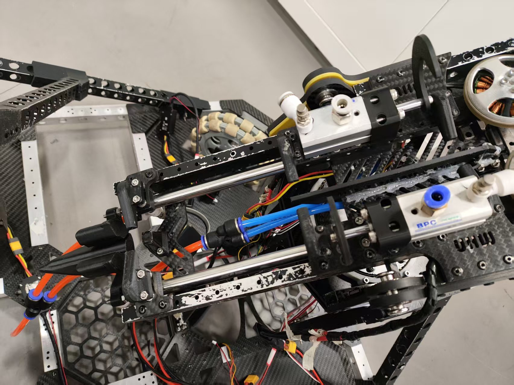
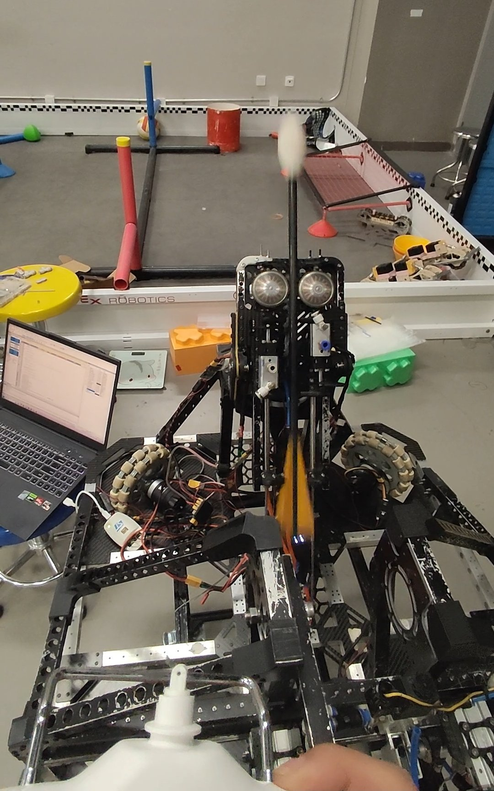

💡 单击图片查看完整图片
取箭射箭机器人，用于复刻全国大学生机器人大赛ROBOCON"投壶行觞"赛题。此机器人具备滑轨多夹爪连续取箭、机械臂协同送箭、以及摩擦轮高速精准发射的能力。该项目在功能与精度上全面达到赛题要求，圆满实现了预期目标。
在该项目中，本人作为电控负责人，独立完成了整车控制系统的软件开发工作。
在系统调试与算法层面，本人负责整车驱动与执行机构的控制：
该项目的核心亮点在于实现了取箭、送箭、发射的全流程自动化控制。通过激光测距反馈与轨迹计算模型，系统能够根据目标距离自动调整发射参数，实现自适应精准打击。多机构的协同控制确保了系统的高效稳定运行。
射箭精度受多种因素影响，包括发射速度、角度、箭体姿态等。通过建立精确的弹道模型，结合激光测距实时反馈，系统能够动态调整摩擦轮转速，补偿各种误差因素。气缸稳固机构确保了箭体在发射瞬间的姿态稳定性。
该机器人系统稳定可靠，圆满完成了全流程取箭与射箭任务，在精度与自动化程度上均达到赛题要求的高性能指标。系统展现出优秀的多机构协同控制能力与自适应精准打击能力。